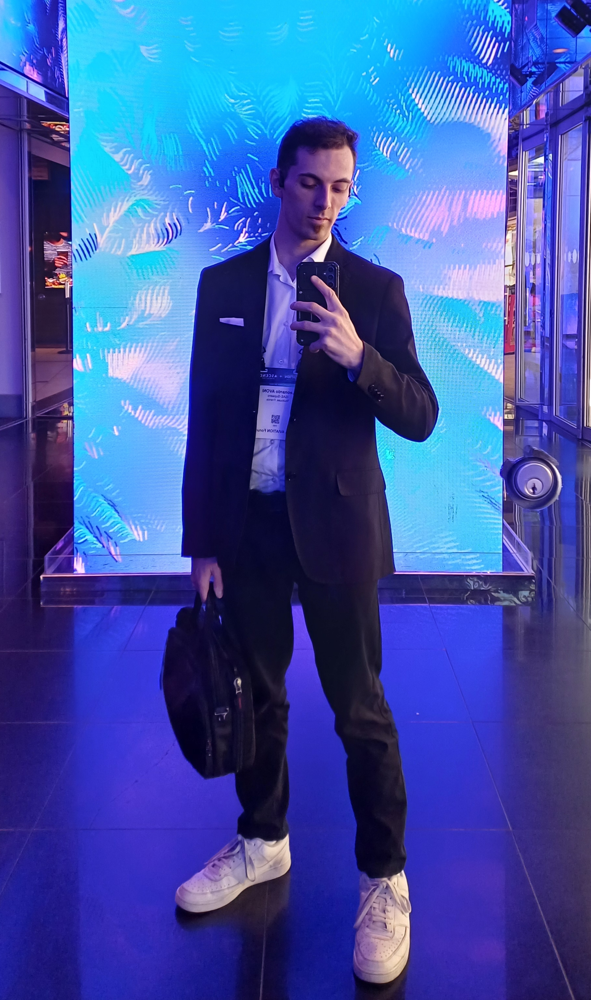
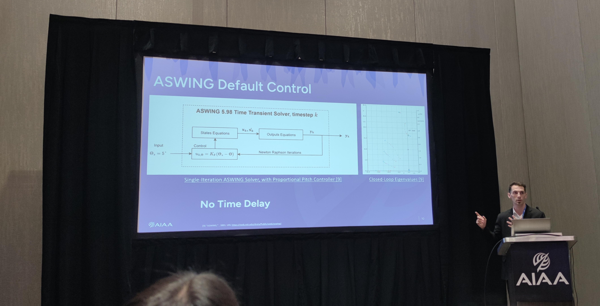

Where I Come From

My middle and high school years were spent in Ferney-Voltaire, France — the town sitting right on the CERN campus fence. That proximity wasn't wasted: one of my final-year projects was presented at CERN, an early taste of scientific communication that I still draw on today. I graduated in 2018 with a Scientific Baccalauréat (19.27/20), specialising in Engineering Sciences.
That same year I enrolled at EPFL (École Polytechnique Fédérale de Lausanne) in Mechanical Engineering. The EPFL curriculum is deliberately broad in the first years — rigorous Analysis, Algebra, and Physics — before opening into specialised subjects: structural mechanics, metals & alloys, electronics, electric motors, production processes, fluid mechanics, and more. That generalist foundation is a feature, not a bug: I can pick up any mechanical system from first principles rather than being confined to one niche.
In 2021 I continued into the Master's programme, steering hard toward aerodynamics: a Fluid Mechanics specialisation and a Space Technologies minor. Five years at EPFL ended with a thesis at the LIS Lab — automated wind-tunnel characterisation of a morphing drone — weaving together aerodynamics, hardware integration, and Python automation into a single project.
What I Do
Professionally: Theory-to-Application

Me presenting WingLoop at AIAA AVIATION FORUM 2025
Since November 2023 I have been a PhD candidate at ISAE-Supaero (Toulouse), researching the dynamics of highly flexible aircraft — the kind where wings bend so much during flight that classical rigid-body models simply break down (think Solar Impulse or NASA's Helios). The work sits at the intersection of aeroelasticity, numerical simulation, and control theory.
Key contributions so far:
- WingLoop — an automation and control library for flexible-aircraft simulation, presented at AIAA AVIATION FORUM 2025, Las Vegas.
- ASWING Extended User Manual — a comprehensive reference for the MIT/Drela aeroelastic solver, now hosted on the official ASWING website.
- Stall modelling for high-aspect-ratio wings — bridging linear potential-flow tools and the nonlinear post-stall regime (ongoing).
- Intern supervision — mentoring aerodynamics interns within the research group.
In parallel — because simulation alone never fully satisfies — I designed and built a quadcopter from scratch: frame selection, electronics, PX4 firmware, SITL testing in Gazebo, and first real flights.
Earlier industry experience includes two internships at Synova SA (Geneva), focused on laser-microjet machine calibration and water-jet stability analysis.
Humanly: Balance & Responsibility
Engineering is a long game. I keep it sustainable through sport, music, and community work — and I find that the discipline and people skills built outside the lab feed directly back into the research. The people around me matter too: I hold a PSSM (mental health first aid) certification and a PSC1 (first aid) qualification, because being useful in an emergency is not optional.
Sports
- Running & cycling (commuting and leisure)
- Dancing
- Experience: Climbing, Judo, Sailing
Music
- Classical Guitar — Intermediate
- Electric Guitar & Music Theory — Basic
Leadership & Social Impact
- PhD Representative — elected student rep for the MEGeP doctoral school (2024–2026).
- Community Lead — Co-leader of the International Group, Toulouse Student Parish.
- Outreach — Homeless outreach volunteer with the Ordre de Malte.
Where I Go
I am looking for environments where theory and practice genuinely meet — where the equations derived in the morning can be tested on hardware in the afternoon. I want to bring the rigour of ISAE-Supaero research and the breadth of the EPFL curriculum to bear on real industrial aerospace challenges, across simulation, software, and physical testing. If that sounds like a fit, please reach out through the links below!